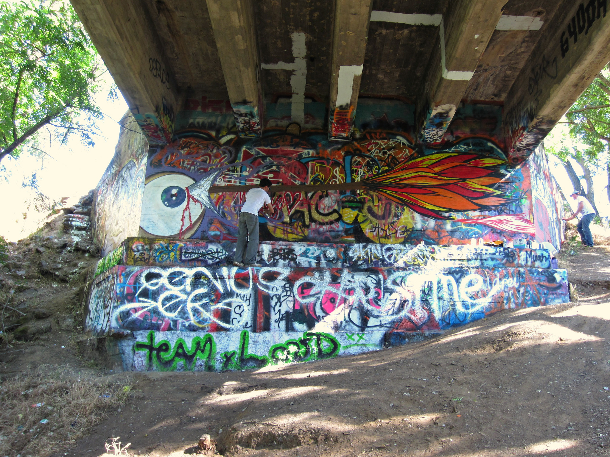
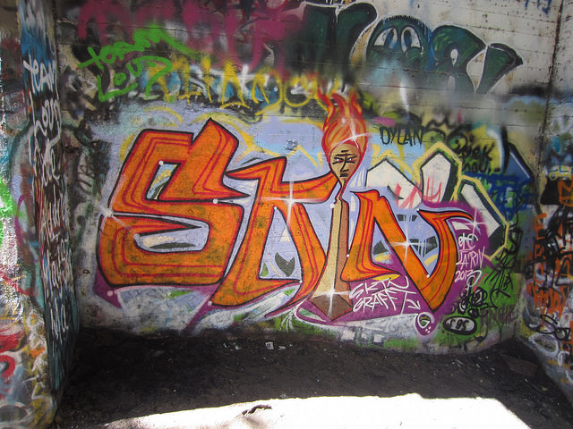
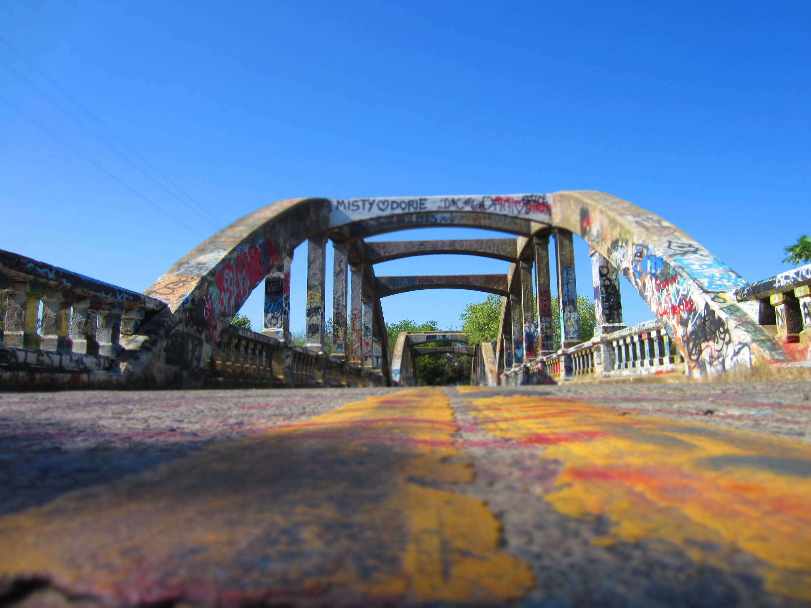

Troy Boone’s 1965 Chevrolet puttered to a halt at the edge of Stevenson Bridge. On Sunday afternoons like these, few cars coasted down the bridge perched between lonely stretches of paved country road. At 93 degrees, the afternoon roasted in the golden singe of sun and silence.
Boone turned off the ignition, got out, and trotted to the head of his car. Then the 50-something-year-old whipped out a point-and-shoot and began snapping photos of his vehicle, framed by the densely graffitied arches of Stevenson Bridge that loomed overhead. Today was Boone’s last day with the car; he was selling the aqua green beauty tomorrow and wanted to get a picture of it with the bridge, built in 1923.
≁
Stevenson Bridge is located about six miles out of Davis. It lunges over Putah Creek, which is flanked on both sides by tousels of tree and brush. Look out from the bridge, and it isn’t hard to imagine yourself over the Amazon River. The bridge—wrinkled by decades of sun and storm—is a hub of badass surrounded by sweeping expanses of farmland. It cradles a near century of myths and stories—from lost virginities to abandoned cars. It has weathered legislation bent on tearing it down. But most notably, perhaps, the bridge persists as a monument of graffiti.
“It’s a bit ironic that I was drawn to this bridge because of all its graffiti,” said Boone. “I do maintenance work for the Rocklin Unified School District, and my job every Monday is to take down graffiti.”
Boone then dug a sharpie out from his trunk and added his name to the bridge: Troy Boone, 5/12/13
≁
Johnathen Duran, Matthew Hatfield, and Cameron Richardson pulled up to Stevenson Bridge as Boone was still loitering around. The three men, in their twenties, were graffiti artists who had come to paint. They had never met Boone, nor had they intended to, but they shook hands with the man after skeptical glances nonetheless. Then the crew headed down to the underside of the bridge, where the real art happens.
Boone trailed curiously behind.
≁
Graffiti, like any other art, comes in different calibers of face value. There is the hasty doodling, or “tagging,” that manifests as racial slurs scrawled in marker all across the upper face of Stevenson Bridge. And there are masterpieces—the almost mural-like paintings that take hours to perfect. These are steeped down the pillars of Stevenson Bridge, tucked away from the world above and seen only by those probing enough to venture down the dirt path into the belly of the bridge.
Graffiti is illegal and considered a misdemeanor, according to UC Davis police sergeant Paul Henoch. Henoch says that all graffiti activity on campus property is punishable, hateful or not. Penalties vary from case to case, but most perpetrators face arrest and fines for clean-up and court costs.
At Stevenson Bridge, though, cops won’t arrest you if they catch you painting. They’ll tell you to get out, but there’s not much more they can do. Since the graffiti traffic there is so constant, tight regulation is futile. Perhaps one tolerable outlet is better than intolerable outlets everywhere. But still, graffiti artists are cautious.
They don’t want to be seen as regulars.
≁
The graffiti crew was suspicious.
Boone was too old, too clean-cut to be so interested in graffiti, they thought. So they stalled. They made subtle cut-throat signals to one another and kept their hands off the spray paint.
“Man, I’m stumped,” said Hatfield. “I don’t know what to draw. Nothing’s coming to me.”
They were just waiting for Boone to leave.
≁
When Boone left, the crew waited as his motor rumbled across the bridge overhead and out into the distance before they sprang to life.
“Fuck, he was probably an undercover cop or something, asking all those weird questions,” said Duran. “The dude was trying to catch me slipping. I wanted to put his eye out so he couldn’t see me.”
The men spent the next two hours painting an Indian arrow piercing an eyeball. It spanned about 20 feet across the underside of the bridge.
“A lot of graffiti is drawn in defiance,” said Hatfield. “We don’t want you to know what we’re saying. You’re viewing this as an outsider and trying to understand what we’re about, but in the end, you’re just not one of us. This is our way of muscling you out.”
Duran, Hatfield, and Richardson consider themselves a “crew,” because they paint together and bounce ideas off one another. Their crew name is Skin Grafft, which alludes to a melding of art and flesh—mutually dependent elements of an artist’s existence.
Every graffiti artist signs his work with a tag name, or alias, that identifies him by unidentifiable means—at least to outsiders.
Duran, the most experienced of the group, goes by the tag name Genius, an identity given to him by a graffiti mentor who recognized Duran as “being smarter than all my friends and coming up with ridiculous painting ideas.”
Hatfield’s tag name, “Anse,” comes from Devil Anse Hatfield, a presiding figure in the Hatfield-McCoy feud, from which Hatfield is descended.
Richardson just began graffiti-ing a few months ago, and his tag name is CAR 13, which represents his initials (for Cameron Amiel Richardson) and the year he began painting.
≁
There is a rugged sense of liberty in graffiti painting. It’s hard to put into words. You have to be there—dizzied by acrid vapors of aerosol paint and dazzled by walls drenched in your own dye—to really feel it. But Duran gives it a shot.
“A canvas is isolated, a private space, something you can roll up and put away,” said Duran. “But a wall is open; it is very much contextual and environmental. Graffiti artists work under the influence of an unpredictable environment. Their art changes with the air quality, with the cold—which makes my hand lock up, or with the direction of the wind—which can affect spray control.”
At Stevenson Bridge, the mortality of one’s art is staggering. The bridge is a mecca for local graffiti artists, so the constant overlay of new drawings stamp out those painted just days prior.
“It’s really humbling to put up graffiti that you think is grand and amazing only to have others paint over it the next week,” said Hatfield. “But you learn not to resent that. As a graffiti artist, you need to understand where it’s coming from. You need to understand that graffiti thrives on a culture of impermanence.”
≁
Many graffiti artists outgrow graffiti by the time they reach the end of their 20s. But Duran doesn’t plan to stop, because he feels that an artist’s prime work takes decades to foster.
“Picasso wasn’t a badass at 20,” said Duran. “He was a badass at 50.”
Graffiti art provides a powerful means of expression that is simultaneously a creation and a violation, at once righteous and reckless. Out of this paradox emerges a remarkably organic and visceral craft.
Two years ago, when Duran learned of his brother’s death from a train accident, he headed straight to Stevenson Bridge the next morning to paint a graffiti piece commemorating his brother. For Duran, it was the only thing powerful enough to cope with the tragedy of a loss that gave no warning and cast no fault. Duran painted a vivid RIP memorial framed with dog tags to honor his brother’s service in the military.
≁
Says Hatfield: “Graffiti, I think, is the most living form of art. It changes with the city. It evolves with time. Graffiti expresses a dark, dark part of me that people don’t know about. But here it lives, on the wall.”
So the crew continues to indulge in what society labels “vandalism,” yet they do so with such grace and sophistication it would almost be a crime to call it that. They paint public walls because it holds the thrill of giving life to something never meant to have one. They paint to be painted over, because such impermanence is curiously addicting.
But mostly, they paint because it would probably kill them not to.
